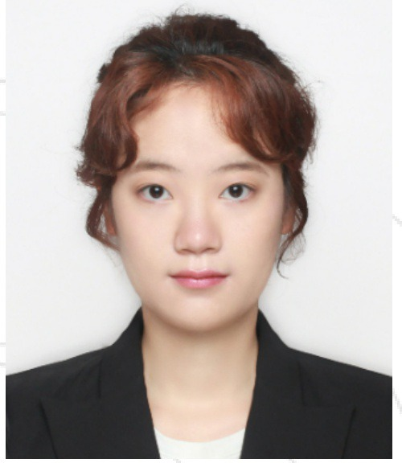
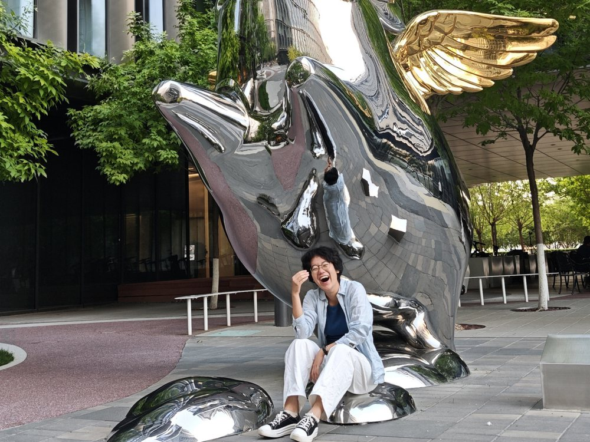
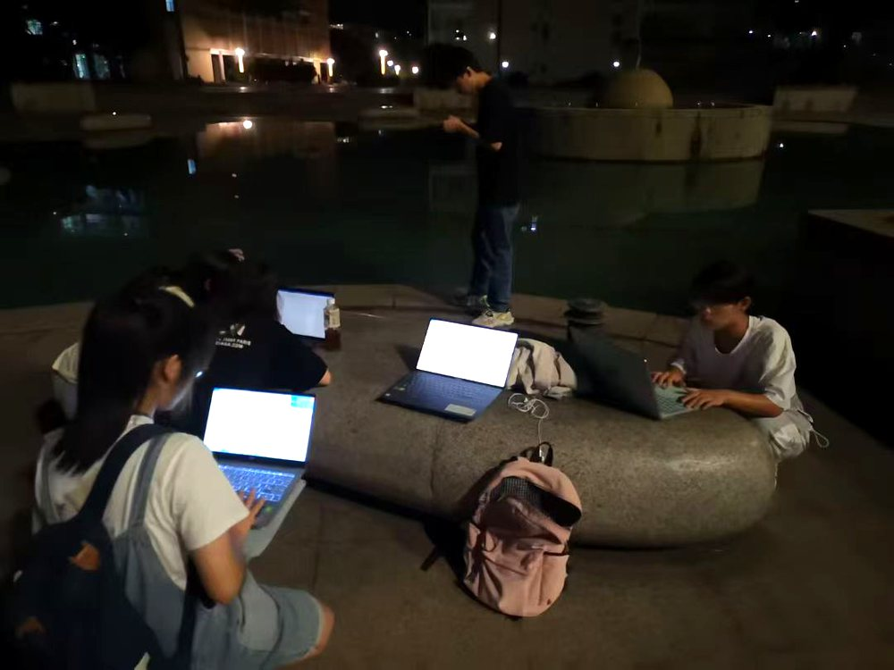
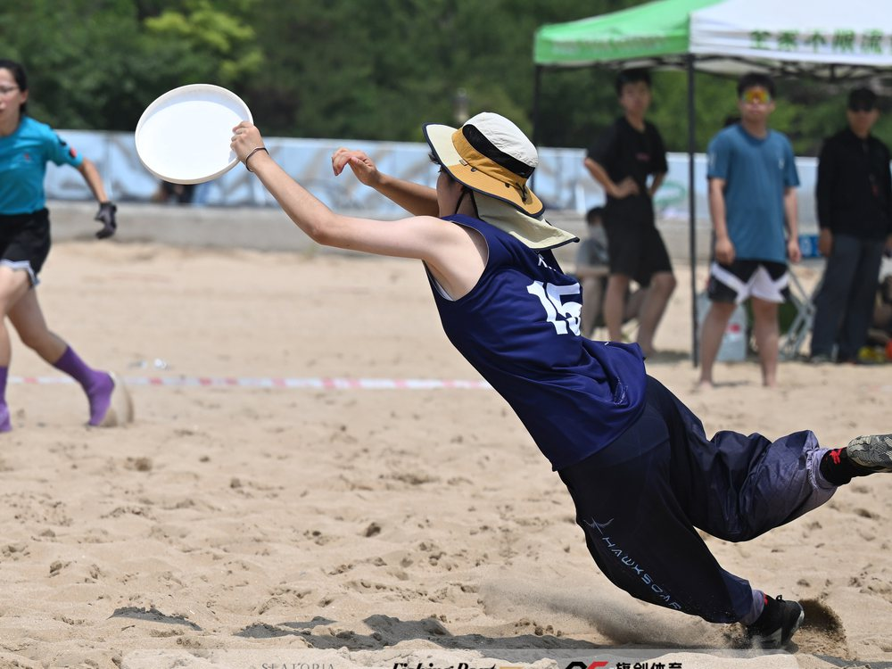

复旦大学Fudan University
国际商务 · 硕士 · 经济学院 · 全日制 M.A. in International Business · School of Economics · Full-time
C9
复旦大学 · 国际商务硕士在读 M.A. in International Business, Fudan University
复旦大学在读研究生。具备扎实的数据分析与建模能力，熟练使用Python、Stata等工具，能独立完成数据清洗、建模与可视化。擅长跨部门沟通协作与项目统筹，执行力强，善于解决复杂问题。拥有用户洞察力、团队领导力及中英双语工作能力，适应快节奏与结果导向环境。 Fudan University graduate student. Solid foundation in data analysis and modeling, proficient in Python, Stata and other tools, capable of independently performing data cleaning, modeling and visualization. Skilled in cross-functional communication, collaboration and project coordination, with strong execution and problem-solving abilities. Possess user insight, team leadership and bilingual proficiency in Chinese and English; adaptable to fast-paced and result-oriented environments.


实习经历Experience 小米科技 · 海外职场管理部 Xiaomi · Overseas Workplace Mgmt.
学术竞赛Competitions 挑战杯 · 国家级大创 · 营销策划 Challenge Cup · National Program
社团经历Leadership 盘客飞盘协会 · 炽茶高校赛 Frisbee Association · Chicha Cup国际商务 · 硕士 · 经济学院 · 全日制 M.A. in International Business · School of Economics · Full-time
金融学（双语实验班）· 本科 · 全日制 B.A. in Finance (Bilingual Experimental Class) · Full-time
海外职场管理部 · 实习生 Overseas Workplace Management Department · Intern
队员Team Member
队员Team Member
队员Team Member
联合创始人Co-founder
会长 · 创始人 · 校队队长 President · Founder · Varsity Team Captain
熟练运用 Office、Python、Stata、PS 等软件；擅长数据分析、文案撰写、视觉设计、自媒体宣发。 Proficient in Office, Python, Stata and Photoshop; strong in data analysis, copywriting, visual design and social-media outreach.
英语：雅思 6.5 分，CET-6 571 分；第二届中译杯演讲大赛成都市一等奖。 English: IELTS 6.5; CET-6 571. First Prize, Chengdu Division, 2nd China Translation Cup Speech Contest.
极限飞盘（2022 年成都极限飞盘公开赛亚军）、素描（2022 年第十五届全国青少年书画大赛成年组金奖）。 Ultimate frisbee (Runner-up, 2022 Chengdu Ultimate Open); sketching (Gold Award, Adult Group, 15th National Youth Calligraphy and Painting Competition, 2022).